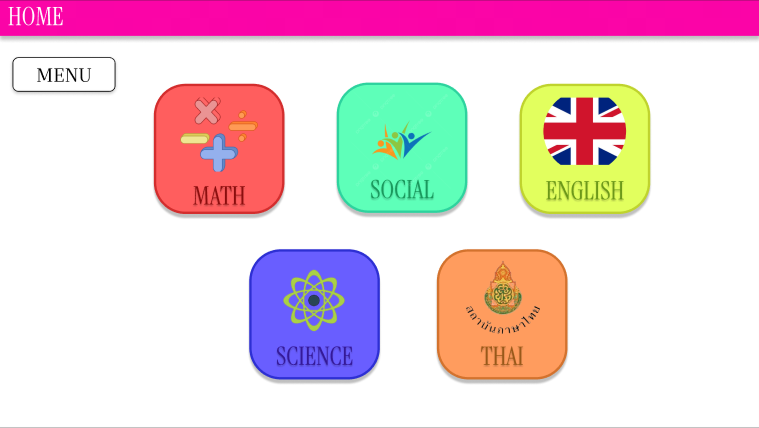
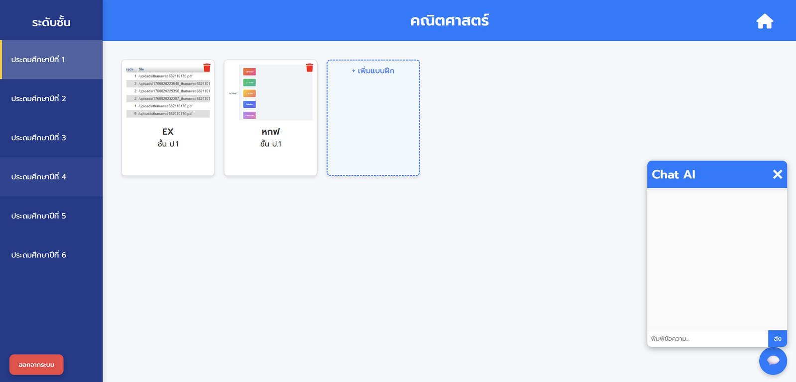

Education Platform
Smart Assignment
An AI-assisted assignment system for Mae Hoi Ngoen School. I gathered requirements, connected the chatbot API, and built PDF generation for worksheets and exams by converting generated HTML into PDF documents.
Role: UX/UI, AI